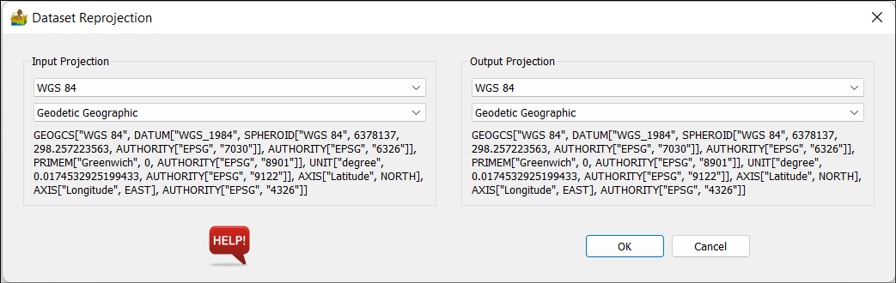

Vector Analysis: Description of Modules¶
Import Vector Data¶
This module imports ESRI shapefiles (.shp), zipped shapefiles (.shp.zip) or GeoPackages (.gpkg). These formats are also referred to as vector data within PyGMI.
Vector files can also be clipped using the bounds option. This can either be in terms of desired extents (seen below) or a mapsheet number.
Import XYZ Data¶
This module imports xyz/point data from a file, for example a csv or Excel file. The user must choose the x and y columns.
Options:
X Channel - This is the column which contains x-coordinates.
Y Channel - This is the column which contains y-coordinates.
Null value - This is the null or nodata value in the data.
Input Projection - The datum and projection is specified here. This is especially important if the user intends to export the data to a vector (GIS) format.
Cut Points using Polygon¶
This tool provides a quick way to cut out data, using a vector file as the boundary for the cut. You will need to prepare the vector file in another package first.
Reproject Vector Data¶
This is a versatile routine allowing for the reprojecting of a dataset between two projections. All projections are obtained from EPSG codes.
The options are the same for both input and output projections. The choice of projection is obtained through drop boxes.
Dataset Gridding¶
The gridding is either nearest neighbour, linear, cubic (all from scipy) or minimum curvature. The input is a point or line or vector dataset, imported from the vector menu. Note that the x and y columns are defined when importing the line or point data.
Options:
Gridding method - This can be nearest neighbour, linear, cubic or minimum curvature.
Cell size - This represents the size of a square raster grid cell, in the units of the grid (normally meters).
Column to grid - This allows you to select the z column to grid.
Null value - masked data value.
Blanking distance - This is a distance in cells from data points, beyond which the grid will be masked.

Structural Complexity¶
Structure complexity takes as input lines, from a shapefile or similar. It then produces different measures of structure complexity, in gridded form. The vector data is rasterized, and a window is passed over the rasterized version of the lines to calculate measures.
Options:
Method - This can be ‘Feature Intersection Density’, ‘Feature Orientation Diversity’, ‘Circular Variance and Dispersion’ or ‘Feature Fractal Dimension’.
Cell size - This represents the size of a square raster grid cell, in the units of the grid (normally meters).
Intersection Density Standard Deviation - the variance of a gaussian centred on each intersection. It represents the area of influence each intersection has. It is in the units of the grid (normally meters).
Intersection Density Line Extension - Distance to extend features which are almost touching, so that an intersection between features is obtained.
Window Size - Size of windows to calculate measure.